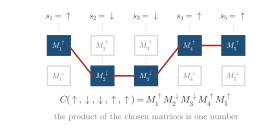
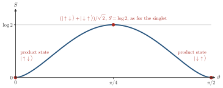

Page 4 of 12 of this session
7.4 The matrix product state ansatz
The exact state of \(L\) spins 1/2 needs \(2^L\) coefficients. Can we store it with a number of parameters that grows only linearly with \(L\)? We will now see that a product of small matrices does this, with about \(2L\chi^2\) numbers, and in the second section the entanglement entropy tells us when this works.
\[|\Psi\rangle = \frac{1}{\sqrt{2}}\left(|{\uparrow\downarrow}\rangle - |{\downarrow\uparrow}\rangle\right), \tag{7.3}\]
\[|\Psi\rangle = \sum_{s_1,\dots,s_L} C(s_1,\dots,s_L)\, |s_1,\dots,s_L\rangle, \qquad s_i \in \{\uparrow,\downarrow\}. \tag{7.4}\]
These are the singlet of two spins and the exact state of \(L\) spins 1/2 of Section 7.3. The exact state has one coefficient \(C(s_1,\dots,s_L)\) for each of the \(2^L\) configurations of the spins, with \(s_i=\uparrow\) or \(\downarrow\) on site \(i\).
The idea that solves this problem is simple. Instead of storing \(C(s_1,\dots,s_L)\) as one large array of \(2^L\) numbers, we write it as a product of matrices, with one matrix for each possible value of each local spin.
Each coefficient of the state is written as a product of matrices,
\[C(s_1,s_2,\dots,s_L) \;\approx\; M^{s_1}_{1}\, M^{s_2}_{2}\, \cdots\, M^{s_L}_{L}, \tag{7.5}\]
where each \(M^{s_i}_i\) is a \(\chi\times \chi\) matrix, with vectors at the two ends of an open chain. For spins 1/2 there are two matrices per site, so the state needs about \(2L\chi^2\) numbers instead of \(2^L\), and the bond dimension \(\chi\) is a parameter that we choose.
Here each \(M^{s_i}_i\) is a \(\chi\times \chi\) matrix, and \(\chi\) is the bond dimension, which is a free parameter that we choose. At the two ends of a finite open chain the matrices are vectors. For a spin-1/2 chain there are two matrices per site, one for \(s_i=\uparrow\) and one for \(s_i=\downarrow\). Therefore the total number of parameters of the state is proportional to \(L\times \chi^2\), which is linear in the system size, in strong contrast with the \(2^L\) of the exact representation (7.4). This is called the matrix product state (MPS) ansatz. At first sight, it is only a choice, and one that looks rather arbitrary. In Sections 7.5 to 7.8 we will answer two questions about it. First, why it is a good choice. Second, what it captures, and what it does not capture, about the physical state.
Let us read the product (7.5) for one configuration of the spins. Each site holds two matrices, and the value of the spin on that site selects one of them. The chosen matrices are multiplied in order, and the result is the coefficient \(C\) of that configuration, as Schematic 7.6 shows.


A matrix product state writes each coefficient of a spin-1/2 chain as
\[C(s_1,\dots,s_L)=M^{s_1}_1M^{s_2}_2\cdots M^{s_L}_L.\]
Each \(M^{s_i}_i\) is a \(\chi\times \chi\) matrix, one for each value of the spin \(s_i\). At the two ends of the chain they are vectors, so \(C\) is a number. How many numbers does it store for \(L=100\) and \(\chi=10\), roughly?
Show the answers
- A. ✗ False
This is false. The number \(2^{100}\approx1.3\times10^{30}\) is the number of coefficients of the exact state. The MPS exists to avoid this number, and it stores \(2L\chi^2=2\times10^4\) numbers.
- B. ✓ True
This is true. Each site has two matrices, one for each spin value, and each matrix has \(\chi^2=100\) entries. The total grows as \(L\chi^2\), so doubling the chain only doubles the storage.
- C. ✗ False
This is false. Even the product state, which is the case \(\chi=1\), needs two numbers per site, so \(200\) for 100 sites. An MPS with \(\chi=10\) has \(10\times10\) matrices on each site and needs more.
We should know from the start that this is not a toy model. Matrix product states give the most accurate results that we have for two of the central hard problems in quantum materials. The first one is the doped two-dimensional Hubbard model (1.7) with second-neighbor hopping, which is related to the unconventional superconductivity of Section 5.13. The second one is the frustrated Heisenberg model on the triangular and kagome lattices in two dimensions. This is where the strongest numerical evidence for real quantum spin liquid physics comes from, and the kagome lattice is the one of herbertsmithite. So MPS are a working tool for the strongly correlated regime, and not only a formal construction.
7.5 Measuring entanglement with the entanglement entropy
How much entanglement does a many-body state have, measured with one number? To see why (7.5) works, we need such a quantitative measure. Let us split the system into two complementary parts, subsystem \(A\) and subsystem \(B\). A state is not entangled, which is also called a product state, if it can be written as \(|\Psi\rangle = |\psi_A\rangle \otimes |\psi_B\rangle\). Two examples are the state \(|{\uparrow\downarrow}\rangle\) and a product of two single-site states that are both polarized along \(x\). The singlet (7.3) is the opposite case. It cannot be written as a product of this form, and it is our main example of an entangled state.
To measure the entanglement with a number, we define the full density matrix \(\rho = |\Psi\rangle \langle\Psi|\), and we trace out subsystem \(B\). This gives the reduced density matrix of \(A\), \(\rho_A = \mathrm{Tr}_B\,\rho\). The entanglement entropy is then the von Neumann entropy of \(\rho_A\).
The entanglement entropy of a part \(A\) of a system in the pure state \(|\Psi\rangle\) is
\[S(\rho_A) = -\,\mathrm{Tr}\!\left(\rho_A \log \rho_A\right), \tag{7.6}\]
with the reduced density matrix \(\rho_A=\mathrm{Tr}_B\,|\Psi\rangle\langle\Psi|\) and the natural logarithm. It is zero for a product state, and \(\log2\) for the singlet (7.3), which is (7.7).
If \(|\Psi\rangle\) is a product state, \(\rho_A = |\psi_A\rangle\langle\psi_A|\) is a projector of rank one, so its only nonzero eigenvalue is \(1\), and we directly get \(S=0\). This means that there is no entanglement and the entropy is zero, which is what we expect.
Let us now check (7.6) on the singlet (7.3). We write \(\rho = |\Psi\rangle\langle\Psi|\) in the product basis and trace over site \(1\), which is our subsystem \(B\), and we obtain
\[\rho_A = \tfrac{1}{2}\,|{\uparrow}\rangle\langle{\uparrow}| + \tfrac{1}{2}\, |{\downarrow}\rangle\langle{\downarrow}|,\]
which is a maximally mixed single-site density matrix, with two eigenvalues both equal to \(1/2\). Then
\[S = -\left(\tfrac12\log\tfrac12 + \tfrac12\log\tfrac12\right) = \log 2. \tag{7.7}\]
This is the maximum entanglement entropy that a single spin-1/2 can have, since a local Hilbert space of dimension \(d\) can have at most \(\log d\). This is why we say that the singlet is maximally entangled, since it uses all the capacity of the local Hilbert space for entanglement.
The steps From the singlet (7.3) to the entropy (7.7)
Let us start with the simplest case, the product state \(|{\uparrow\downarrow}\rangle\). Its density matrix is \(|{\uparrow}\rangle\langle{\uparrow}|\otimes|{\downarrow}\rangle\langle{\downarrow}|\), and the trace over the second spin, which is subsystem \(B\), gives \(\rho_A=|{\uparrow}\rangle\langle{\uparrow}|\), with the eigenvalues \(1\) and \(0\), so \(S=0\).
For the singlet we write the four terms of \(\rho=|\Psi\rangle\langle\Psi|\),
\[\rho=\tfrac12\Big(|{\uparrow\downarrow}\rangle\langle{\uparrow\downarrow}|-|{\uparrow\downarrow}\rangle\langle{\downarrow\uparrow}|-|{\downarrow\uparrow}\rangle\langle{\uparrow\downarrow}|+|{\downarrow\uparrow}\rangle\langle{\downarrow\uparrow}|\Big).\]
The trace over the second spin is \(\rho_A=\sum_s\langle s|_B\,\rho\,|s\rangle_B\), with \(s=\uparrow,\downarrow\). A term \(|a\,b\rangle\langle a'\,b'|\) gives \(|a\rangle\langle a'|\,\langle b'|b\rangle\), so it survives only when the second spin is the same on the two sides, \(b=b'\). The two cross terms have \(b\neq b'\) and drop out, and the two other terms give
\[\rho_A=\tfrac12\,|{\uparrow}\rangle\langle{\uparrow}|+\tfrac12\,|{\downarrow}\rangle\langle{\downarrow}|.\]
Its eigenvalues are \(\tfrac12\) and \(\tfrac12\), and (7.6) gives \(S=-2\cdot\tfrac12\log\tfrac12=\log2\). The sign of the cross terms never enters, which is why the state with a plus sign has the same entropy.
Let us see how the entropy depends on the state. We take \(\cos\vartheta\,|{\uparrow\downarrow}\rangle+\sin\vartheta\,|{\downarrow\uparrow}\rangle\), which is a product state for \(\vartheta=0\) and has the weights of the singlet for \(\vartheta=\pi/4\). The reduced density matrix has the eigenvalues \(\cos^2\vartheta\) and \(\sin^2\vartheta\), and Schematic 7.7 shows the entropy (7.6) that follows from them.

The entanglement of two spins can be tested when they are far apart. In a Bell test two electron spins 1.3 km apart are entangled, and each spin is read out along an axis that is chosen at random. A combination of the correlations of the two readouts, the CHSH value, is at most \(2\) in any local realist theory. The experiment finds \(2.42\pm0.20\) in 245 trials. Our own calculation, which is not in the article, gives at most \(2\) for any product state and \(2\sqrt2\approx2.83\) for the singlet (7.3) with the best axes. So a value above \(2\) is a sign of entanglement, which for a pure state of two spins is a nonzero entropy (7.6). The measurement is in this article.
The entanglement entropy of one site \(A\) of a two-spin state is
\[S=-\mathrm{Tr}\left(\rho_A\log\rho_A\right),\]
with \(\rho_A\) the reduced density matrix of \(A\). The singlet \((|{\uparrow\downarrow}\rangle-|{\downarrow\uparrow}\rangle)/\sqrt2\) has \(S=\log2\). What is \(S\) for \((|{\uparrow\downarrow}\rangle+|{\downarrow\uparrow}\rangle)/\sqrt2\)?
Show the answers
- A. ✗ False
This is false. A product \((a|{\uparrow}\rangle+b|{\downarrow}\rangle)(c|{\uparrow}\rangle+d|{\downarrow}\rangle)\) with \(ac=0\) and \(bd=0\) cannot have both \(ad\) and \(bc\) nonzero. So the state is not a product and its entropy is not zero.
- B. ✗ False
This is false. One spin-1/2 has two states, so the entropy of one site cannot exceed \(\log 2\). The value \(2\log2\) would need four states on the site.
- C. ✓ True
This is true. Tracing out one site gives \(\tfrac12|{\uparrow}\rangle\langle{\uparrow}|+\tfrac12|{\downarrow}\rangle\langle{\downarrow}|\), because the cross terms have a different second spin and drop out. The entropy depends on the weights of the two terms and not on their relative sign.
The entanglement entropy of one site \(A\) of a two-spin state is
\[S=-\mathrm{Tr}\left(\rho_A\log\rho_A\right).\]
Which of these states has \(S=0\)?
Show the answers
- A. ✗ False
This is false. Tracing out the second spin gives \(\rho_A=\tfrac12|{\uparrow}\rangle\langle{\uparrow}|+\tfrac12|{\downarrow}\rangle\langle{\downarrow}|\), as for the singlet, so \(S=\log2\).
- B. ✓ True
This is true. The state is \(\frac{1}{\sqrt2}(|{\uparrow}\rangle+|{\downarrow}\rangle)\otimes\frac{1}{\sqrt2}(|{\uparrow}\rangle+|{\downarrow}\rangle)\), a product of two spins that point along \(x\). So \(\rho_A\) is a projector and \(S=0\), although all four coefficients are nonzero.
- C. ✗ False
This is false. The state is not a product, since \(C(\uparrow\uparrow)\,C(\downarrow\downarrow)=0\) while \(C(\uparrow\downarrow)\,C(\downarrow\uparrow)=\tfrac13\). The eigenvalues of \(\rho_A\) are \(0.873\) and \(0.127\), which give \(S=0.381\), about \(0.55\log2\).
The number of nonzero coefficients does not decide the entanglement. What decides it is whether the table \(C(s_1,s_2)\) is a product of one factor per site, which is a matrix product state with \(\chi=1\).
Write the singlet \((|{\uparrow\downarrow}\rangle-|{\downarrow\uparrow}\rangle)/\sqrt2\) as a matrix product state of two sites, \(C(s_1,s_2)=v^{s_1}\cdot w^{s_2}\), with two vectors \(v^\uparrow\), \(v^\downarrow\) on the first site and two vectors \(w^\uparrow\), \(w^\downarrow\) on the second. Show that vectors of dimension \(\chi=2\) are enough, and that \(\chi=1\) is not.
Solution
We take \(v^\uparrow=(1,0)\) and \(v^\downarrow=(0,1)\), so that \(v^{s_1}\cdot w^{s_2}\) is the first component of \(w^{s_2}\) when \(s_1=\uparrow\) and its second component when \(s_1=\downarrow\). The singlet has \(C(\uparrow\uparrow)=0\), \(C(\uparrow\downarrow)=1/\sqrt2\), \(C(\downarrow\uparrow)=-1/\sqrt2\) and \(C(\downarrow\downarrow)=0\), so we need
\[w^\uparrow=\left(0,\,-\tfrac{1}{\sqrt2}\right),\qquad w^\downarrow=\left(\tfrac{1}{\sqrt2},\,0\right).\]
With \(\chi=1\) the vectors are numbers, \(C(s_1,s_2)=a_{s_1}b_{s_2}\), and then
\[C(\uparrow\uparrow)\,C(\downarrow\downarrow)=a_\uparrow b_\uparrow a_\downarrow b_\downarrow=C(\uparrow\downarrow)\,C(\downarrow\uparrow).\]
For the singlet the left side is \(0\) and the right side is \(-\tfrac12\), so no choice of numbers works, and \(\chi=2\) is the smallest bond dimension. This is the bound (7.10), \(S\le\log \chi\), seen by hand, since the singlet has \(S=\log2\). For two sites the MPS with \(\chi=2\) stores \(8\) numbers, more than the \(4\) coefficients, so the gain of (7.5) appears only for longer chains.
Try it. Compute the time of the ground-state calculation for the sizes of Ns, with sc.maxm = 20. The time should grow roughly linearly with the number of sites. Then raise sc.maxm to 40 and check that each time is longer but the curve stays straight, which is the linear growth in \(L\) of (7.5).
- In Section 7.8 the bond dimension \(\chi\) sets the largest entropy \(\log \chi\) that the ansatz can hold across a bond.
- In Section 8.4 the kagome lattice of herbertsmithite is the frustrated lattice where a spin liquid is expected.
- In Section 10.4 the same ansatz, with the bond dimension called \(D\), stores \(L\,d\,D^2\) numbers and is used to classify images.